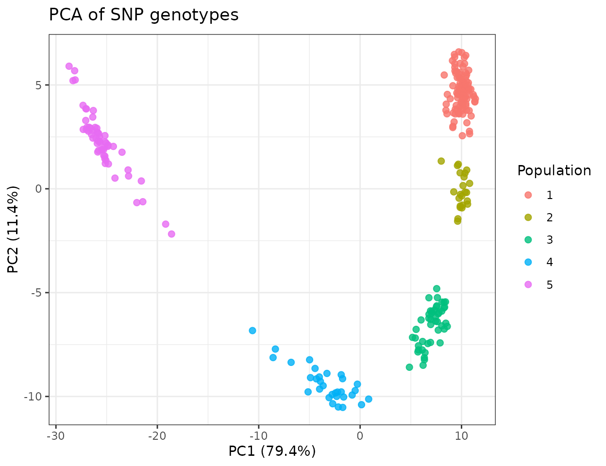
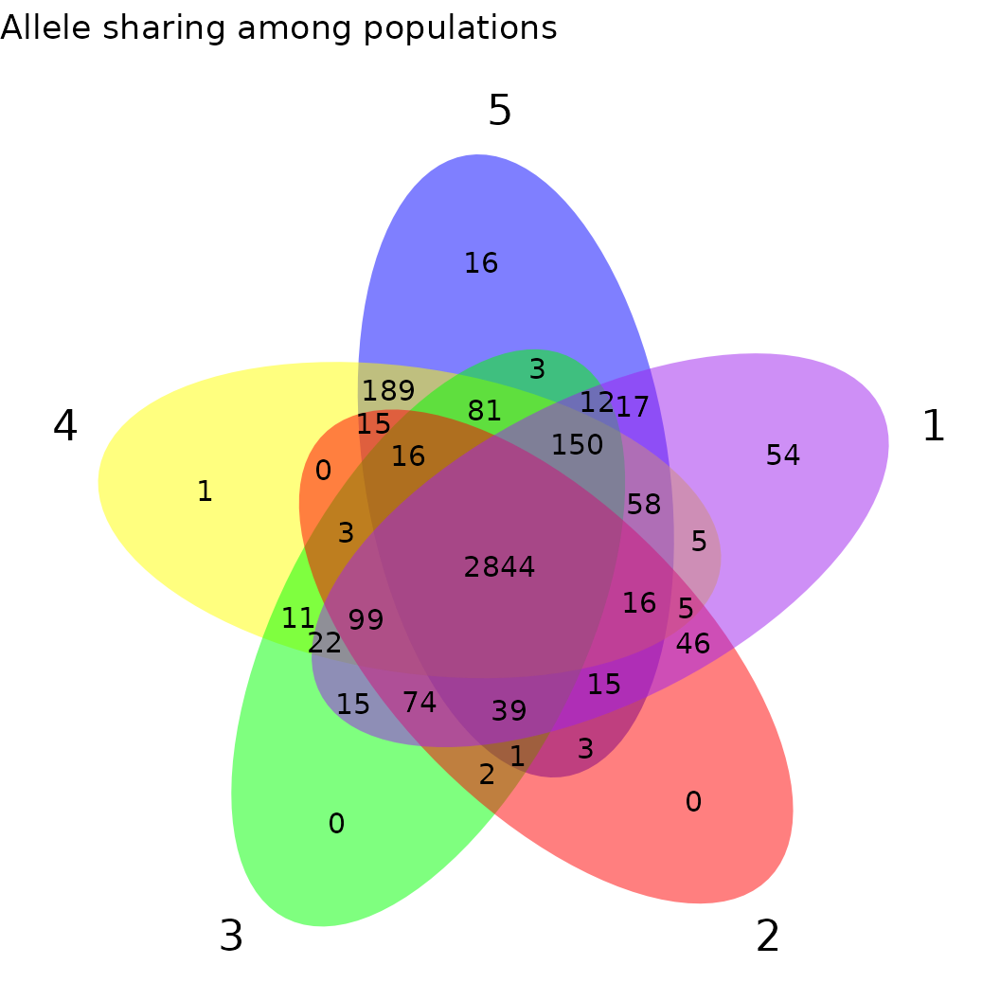
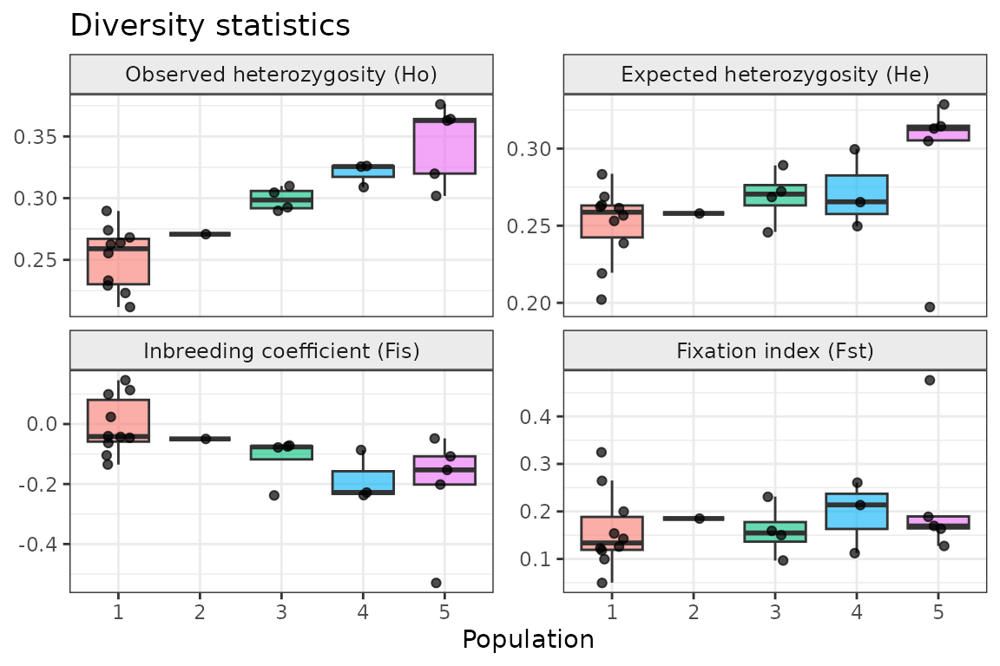
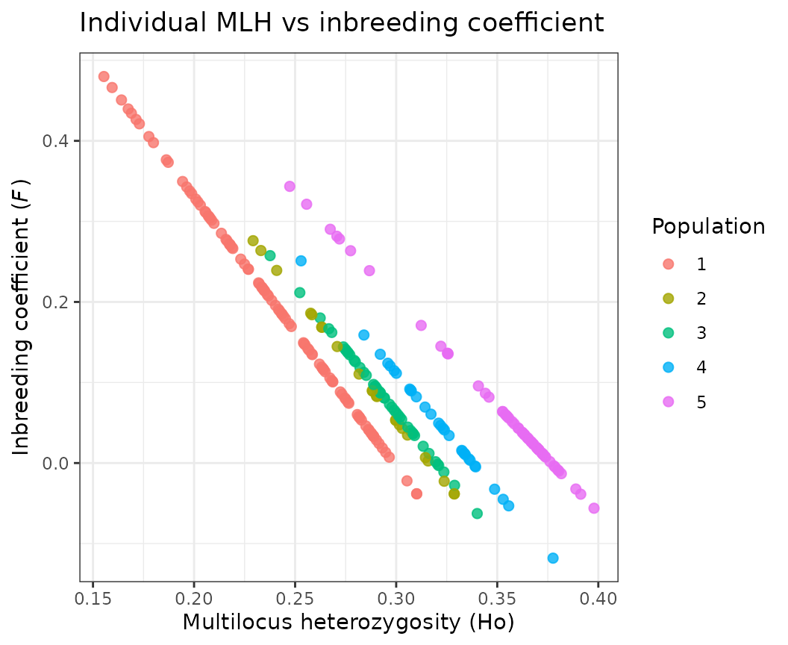
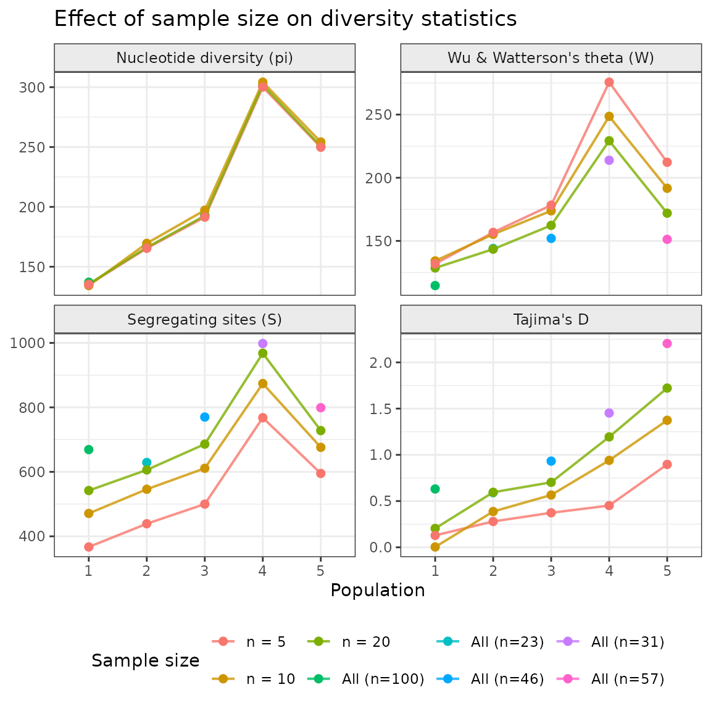

Overview
fastDiversity provides fast and flexible calculation of
standard population genetic diversity statistics from biallelic SNP
data. It is designed for datasets where samples span multiple
populations, sites, or species that need to be analysed simultaneously,
a common scenario in conservation genomics and comparative population
studies.
The package accepts genotype data in standard biallelic dosage
format: 0 (homozygous reference, aa),
1 (heterozygous, aA), and 2
(homozygous alternate, AA), with missing data as
NA. This format is the output produced by most SNP-calling
pipelines.
Example dataset: Doryphora sassafras
The package ships with SNP data from Doryphora sassafras
(Sassafras, Atherospermataceae), a rainforest tree endemic to the
eastern Australian coast. The dataset spans five genetic populations,
each sampled across multiple sites. This structure, multiple
hierarchical grouping levels within a single species, is the typical use
case for fastDiversity.
data(example_data)
# Genotype matrix: rows are samples, columns are SNP loci
# Values are 0 (aa), 1 (aA), 2 (AA), or NA (missing)
dim(example_gt)
#> [1] 257 1906
example_print <- example_gt[c(1,100,150,200,250), 1:10]
colnames(example_print) <- NULL
example_print
#>
#> NSW1008199 0 2 0 2 0 0 1 1 1 1
#> NSW1015673 0 1 1 2 2 0 2 1 1 0
#> NSW1014534 2 0 1 1 2 1 0 0 1 0
#> NSW1088929 2 0 2 1 2 1 1 0 0 1
#> NSW1146190 2 0 1 1 2 1 0 1 0 0
# Metadata: one row per sample, matching the row order of example_gt
head(example_meta)
#> sample site population
#> 1 NSW1008199 Wambam_Creek 5
#> 2 NSW1008169 Wambam_Creek 5
#> 3 NSW1008189 Wambam_Creek 5
#> 4 NSW1008229 Wambam_Creek 5
#> 5 NSW1008224 Wambam_Creek 5
#> 6 NSW1009574 Wambam_Creek 5
# Five genetic populations, each with multiple sampling sites
table(example_meta$site, example_meta$population)
#>
#> 1 2 3 4 5
#> Airdrop_Rd 6 0 0 0 0
#> Best_of_All_Lookout 5 0 0 0 0
#> Big_Nellie 0 0 5 0 0
#> Big_Scrub Loop1 6 0 0 0 0
#> Big_Scrub Loop2 6 0 0 0 0
#> Binna_Burra 6 0 0 0 0
#> Blackbutt 4 0 0 0 0
#> Bo_Bo_River 0 6 0 0 0
#> Boorganna 0 0 6 0 0
#> Broughton 0 0 0 0 5
#> Cambewarra 0 0 0 0 5
#> Clyde_Mountain 0 0 0 0 4
#> Conjola 0 0 0 0 7
#> Coombahjah 0 5 0 0 0
#> Dingo_Tops 0 0 6 0 0
#> Dorrigo_NP 0 5 0 0 0
#> Fitzroy_Falls 0 0 0 0 6
#> Gibbergunyah Nightcap Tk 11 0 0 0 0
#> Glen_NR 0 0 3 0 0
#> Gloucester_Tops 0 0 6 0 0
#> Jerusalem_Tk 0 0 5 0 0
#> Junuy_Jurum_NP 0 1 0 0 0
#> Katandra_NR 0 0 0 4 0
#> Killen_Falls 1 0 0 0 0
#> Knodingbull 0 0 6 0 0
#> Koonyum_Range 6 0 0 0 0
#> Lamington_NP 6 0 0 0 0
#> Macquarie_Pass 0 0 0 0 4
#> Mary_Cairncross 6 0 0 0 0
#> Minnamurra 0 0 0 0 1
#> Mt_Jerusalem 5 0 0 0 0
#> Mt_Keira 0 0 0 0 3
#> Mt_Nardi 11 0 0 0 0
#> Mt_Nothofagus 5 0 0 0 0
#> Mt_Tomah 0 0 0 4 0
#> Murramurang_NP 0 0 0 0 6
#> Old_Mill_Rd 3 0 0 0 0
#> Olney_SF 0 0 0 6 0
#> Oxley_Hwy 0 0 2 0 0
#> Palm_Grove 0 0 0 6 0
#> Pine_Creek_SF 0 2 0 0 0
#> Rolland_Plains 0 0 3 0 0
#> Royal_NP 0 0 0 0 2
#> Rummery_Road 6 0 0 0 0
#> Strickland_SF 0 0 0 6 0
#> Terania_Creek 5 0 0 0 0
#> Tungun Rd Rocky Ck 2 0 0 0 0
#> Wambam_Creek 0 0 0 0 6
#> Wandean_Gap 0 0 0 0 2
#> Wang_Wauk_SF 0 0 0 2 0
#> Washpool 0 4 0 0 0
#> Wauchope 0 0 1 0 0
#> Werrikimbe_NP 0 0 3 0 0
#> Wodi_Wodi_Tk 0 0 0 0 6
#> Wollemi_NP 0 0 0 3 0The row order of example_gt must match the row order of
example_meta, the nth row of the genotype matrix
corresponds to the nth row of the metadata.
Principal coordinates analysis
A distance-based PCA provides an intuitive overview of genetic structure across individuals. PC scores are computed from pairwise genetic distances and merged with metadata for plotting:
pca <- prcomp(dist(example_gt), center = TRUE, scale. = TRUE)
s_pca <- summary(pca)
# Axis labels showing % variance explained
importance <- s_pca[["importance"]][2, ]
axis_names <- paste0(names(importance), " (", round(importance * 100, 1), "%)")
# Merge PC scores with sample metadata
pcs <- pca$x %>%
data.frame() %>%
merge(example_meta, by.x = 0, by.y = "sample")
ggplot(pcs, aes(x = PC1, y = PC2, color = factor(population))) +
geom_point(size = 2, alpha = 0.8) +
labs(
title = expression("PCA of SNP genotypes"),
x = axis_names[1],
y = axis_names[2],
color = "Population"
) +
theme_bw()
Clustering of samples in PCA space corroborates the population structure indicated by the diversity statistics and private allele analysis.
Allele sharing and private alleles
Understanding which alleles are unique to a single population (private) versus shared across populations is a useful first step in assessing population distinctiveness. Populations with many private alleles may represent distinct evolutionary lineages that warrant separate management.
Step 1: Build the allele list
make_allele_list() takes the genotype matrix and a
grouping vector and returns a named list of allele sets, one per
group.
allele_list_population <- make_allele_list(example_gt, example_meta$population)
#> There are 57 samples in 5
#> There are 31 samples in 4
#> There are 46 samples in 3
#> There are 23 samples in 2
#> There are 100 samples in 1
names(allele_list_population)
#> [1] "5" "4" "3" "2" "1"Step 2: Visualise allele overlap
Because the result is a standard named list, it works directly with
ggvenn:

Alternatively, an upset plot may be easier to read:
ggVennDiagram::plot_upset(ggVennDiagram::Venn(allele_list_population), sets.bar.show.numbers = FALSE)
This shows how much allelic diversity is shared across populations versus restricted to individual groups. A large exclusive region indicates a genetically distinct population.
Step 3: Count private and total alleles
private_total_alleles_population <- calculate_private_alleles(allele_list_population)
private_total_alleles_population
#> population private_allele_count total_allele_count
#> 1 5 16 3475
#> 2 4 1 3515
#> 3 3 0 3372
#> 4 2 0 3178
#> 5 1 54 3471
#> 6 Total 3812 3812The output gives private allele counts (alleles found in only one population) and total allele counts per group. These can be used directly in reporting or joined to the main statistics table (shown below).
Diversity statistics with faststats()
faststats() calculates allelic richness, heterozygosity,
inbreeding coefficients, and population differentiation for each
combination of genetic group and site, with locus-level filtering
applied independently within each genetic group.
Filtering parameters
| Parameter | Description |
|---|---|
minimum_n |
Exclude sites with fewer than this many individuals |
minimum_loci |
Exclude genetic groups where fewer than this many loci pass filtering |
maf |
Minor allele frequency threshold: loci below this value are excluded per genetic group (typically 0.05) |
max_missingness |
Exclude loci missing in more than this proportion of samples within a group (e.g. 0.3 removes loci missing in >30% of samples) |
Filtering is applied within each genetic group independently. A locus retained for one population may be excluded for another if it fails MAF or missingness thresholds in that group, an important distinction from global pre-filtering, which can retain uninformative loci in some groups or discard informative ones in others.
Running faststats
genetic_group_variable defines the level at which locus
filtering is applied (e.g. species or population).
site_variable defines the grouping unit for which
statistics are calculated (e.g. sampling site). The function returns one
row per unique genetic group × site combination.
basicstats <- faststats(
gt = example_gt,
genetic_group_variable = example_meta$population,
site_variable = example_meta$site,
minimum_n = 6,
minimum_loci = 50,
maf = 0.05,
max_missingness = 0.3
)
#> [1] "1 complete"
#> [1] "2 complete"
#> [1] "3 complete"
#> [1] "4 complete"
#> [1] "5 complete"
#> [1] "Process complete!"
head(basicstats)
#> # A tibble: 6 × 11
#> group site Ar Ho He uHe Fis Fst uFis loci n
#> <chr> <chr> <chr> <chr> <chr> <chr> <chr> <chr> <chr> <chr> <chr>
#> 1 1 Airdrop_Rd 1.25… 0.26… 0.25… 0.283 -0.0… 0.14… 0.05… 844 6
#> 2 1 Big_Scrub Loop1 1.28… 0.28… 0.26… 0.28… -0.1… 0.12… -0.0… 844 6
#> 3 1 Big_Scrub Loop2 1.25… 0.26… 0.26… 0.29… 0.02… 0.09… 0.11… 844 6
#> 4 1 Binna_Burra 1.25… 0.26… 0.25… 0.27… -0.0… 0.15… 0.05… 844 6
#> 5 1 Gibbergunyah Nigh… 1.25… 0.25… 0.28… 0.29… 0.09… 0.05… 0.14… 844 11
#> 6 1 Koonyum_Range 1.22… 0.23… 0.21… 0.24… -0.0… 0.26… 0.04… 844 6Output columns explained
| Column | Description |
|---|---|
group |
Genetic group ID (e.g. population, species) |
site |
Site ID |
Ar |
Allelic richness per site per group, standardised for sample size |
Ho |
Observed heterozygosity: proportion of heterozygous loci averaged across individuals |
He |
Expected heterozygosity under Hardy-Weinberg equilibrium within site_variable |
uHe |
Unbiased expected heterozygosity (corrected for small sample size) |
Fis |
Inbreeding coefficient (1 - Ho/He). Positive values indicate excess homozygosity; negative values indicate excess heterozygosity |
uFis |
Unbiased inbreeding coefficient (1 - Ho/uHe) |
Fst |
Population differentiation: Weir & Cockerham (1984) FST, calculated as (Ht - Hs) / Ht |
loci |
Number of loci retained after filtering for this group |
n |
Number of individuals sampled at this site x group combination |
Plotting diversity statistics
Because faststats() returns one row per site, each
population contributes multiple points, one per site. A faceted
multi-panel plot gives a simultaneous overview of heterozygosity,
inbreeding, and differentiation:
library(tidyr)
stats_long <- basicstats %>%
mutate(across(c(Ho, He, Fis, Fst), as.numeric)) %>%
pivot_longer(
cols = c(Ho, He, Fis, Fst),
names_to = "statistic",
values_to = "value"
) %>%
mutate(statistic = factor(statistic,
levels = c("Ho", "He", "Fis", "Fst"),
labels = c("Observed heterozygosity (Ho)",
"Expected heterozygosity (He)",
"Inbreeding coefficient (Fis)",
"Fixation index (Fst)")
))
ggplot(stats_long, aes(x = group, y = value, fill = group)) +
geom_boxplot(alpha = 0.6, outlier.shape = NA) +
geom_jitter(width = 0.15, size = 1.5, alpha = 0.7) +
facet_wrap(~ statistic, scales = "free_y", ncol = 2) +
labs(
title = "Diversity statistics",
x = "Population",
y = NULL
) +
theme_bw() +
theme(
legend.position = "none",
strip.background = element_rect(fill = "grey92"),
strip.text = element_text(size = 9)
)
Optional: bootstrapped confidence intervals
For published reporting, bootstrapped confidence intervals can be added around Ho, He, and Fis. Two resampling strategies are available:
-
By loci
(
get_CI_loci_resampling = TRUE): analogous tohierfstat::boot.ppfis: loci are resampled with replacement to quantify how sensitive statistics are to the choice of markers. -
By individuals
(
get_CI_individual_resampling = TRUE): analogous todiveRsity::basicstats: individuals are resampled with replacement to quantify sampling uncertainty.
basicstats_ci <- faststats(
gt = example_gt,
genetic_group_variable = example_meta$population,
site_variable = example_meta$site,
minimum_n = 6,
minimum_loci = 50,
maf = 0.05,
max_missingness = 0.3,
get_CI_loci_resampling = TRUE,
boots = 100,
CI_alpha = 0.05
)CI columns are appended with a prefix for the resampling strategy
(loci_ or ind_) and a suffix for the statistic
and quantile boundary (e.g. loci_ho.2.5%,
loci_ho.97.5%). These plug directly into
geom_pointrange():
ggplot(basicstats_ci, aes(x = group, y = as.numeric(Ho), colour = group)) +
geom_pointrange(
aes(
ymin = as.numeric(`loci_ho.2.5%`),
ymax = as.numeric(`loci_ho.97.5%`)
),
position = position_jitter(width = 0.2, seed = 1),
size = 0.6
) +
labs(
title = expression("Ho ± 95% CI (loci bootstrap)"),
x = "Population",
y = "Observed heterozygosity (Ho)"
) +
theme_bw() +
theme(legend.position = "none")Optional: Hardy-Weinberg equilibrium testing
faststats() can test whether allele frequencies at each
site deviate significantly from Hardy-Weinberg equilibrium expectations
using Fisher’s exact test, with p-values combined across loci using
Fisher’s method:
basicstats_hwe <- suppressWarnings( faststats(
gt = example_gt,
genetic_group_variable = example_meta$population,
site_variable = example_meta$population,
minimum_n = 6,
minimum_loci = 50,
maf = 0.05,
max_missingness = 0.3,
run_HWE_test = TRUE,
return_locus_stats = FALSE # set TRUE to retrieve per-locus p-values
))
basicstats_hwe[,c("site", "Ho", "He", "Fis", "Fst", "loci", "n", "HWE_p")]The HW_fisher_p column gives the combined p-value per
site. Sites with values below the chosen alpha threshold show
significant deviation from HWE, which may reflect inbreeding, cryptic
population structure within a site, selection at linked loci, or
genotyping artefacts.
Individual-level statistics
In addition to site-level summaries, fastDiversity
provides two functions for calculating statistics at the level of
individual samples. These are useful for examining variation in
inbreeding and heterozygosity on an individual basis, which can be
informative for fitness and hybridisation.
Both functions apply the same locus-level filtering as
faststats(): MAF and missingness thresholds are applied per
genetic group before calculation, ensuring that individual estimates are
based on the same high-quality, informative loci used in
population-level analyses.
Individual multilocus heterozygosity
individual_Ho() calculates multilocus heterozygosity
(MLH) for each sample: the proportion of retained loci that are
heterozygous in that individual.
ind_MLH_ho <- individual_Ho(
example_gt,
genetic_group_variable = example_meta$population,
maf = 0.05,
max_missingness = 0.3
)
head(ind_MLH_ho)
#> NSW1008199 NSW1008169 NSW1008189 NSW1008229 NSW1008224 NSW1009574
#> 0.3719705 0.2673913 0.2556880 0.2719298 0.2706522 0.3679834Individual inbreeding coefficient (Wright’s F)
individual_F() calculates Wright’s inbreeding
coefficient for each sample: F = 1 − (Ho / He), where He is
calculated across the genetic group. This measures the probability that
both alleles at a locus are identical by descent (Frankham, Ballou &
Briscoe 2010). Because He is calculated at the group level rather than
across genetic groups, estimates are not deflated by the Wahlund effect
that would arise from pooling genetically differentiated
individuals.
ind_F <- individual_F(
example_gt,
genetic_group_variable = example_meta$population,
maf = 0.05,
max_missingness = 0.3
)
head(ind_F)
#> NSW1008199 NSW1008169 NSW1008189 NSW1008229 NSW1008224 NSW1009574
#> 0.01264873 0.29024170 0.32130680 0.27819474 0.28158612 0.02323208Relating MLH to F
Plotting individual MLH against F reveals the expected negative relationship: individuals with higher observed heterozygosity have lower inbreeding coefficients.
# Combine into a data frame and add population labels
ind_df <- data.frame(
sample = names(ind_MLH_ho),
MLH = as.numeric(ind_MLH_ho),
F = as.numeric(ind_F)
) %>%
merge(example_meta, by = "sample")
ggplot(ind_df, aes(x = MLH, y = F, colour = as.factor(population))) +
geom_point(size = 2, alpha = 0.8) +
labs(
title = expression("Individual MLH vs inbreeding coefficient"),
x = "Multilocus heterozygosity (Ho)",
y = expression(paste("Inbreeding coefficient (", italic(F), ")")),
colour = "Population"
) +
theme_bw()
Nucleotide diversity and Tajima’s D
pi_theta_d_stats() calculates nucleotide diversity (pi),
Wu & Watterson’s theta (W), the number of segregating sites (S), and
Tajima’s D for each genetic site_variable specified within
genetic_group_variable. The implementation follows the
missing-data-aware approach of Korunes & Samuk (2021), meaning that
loci with missing genotypes contribute proportionally rather than being
excluded entirely, an important correction for RADseq and DArTseq data
where missingness is common.
Running pi_theta_d_stats
When n = NULL, all individuals at each site are used.
The n argument can be set to a fixed integer to subsample
individuals, which allows comparison across sites with unequal sample
sizes:
# Use all available individuals per population
D_n_all <- pi_theta_d_stats(
example_gt,
genetic_group_variable = example_meta$population,
site_variable = example_meta$population,
n = NULL,
minimum_n = 5,
minimum_loci = 5,
max_missingness = 0.1,
maf = 0,
allele_count_min = 0
)
#> [1] "Process complete!"
# Subsample to 20 individuals per population
D_n_20 <- pi_theta_d_stats(
example_gt,
genetic_group_variable = example_meta$population,
site_variable = example_meta$population,
n = 20,
minimum_n = 5,
minimum_loci = 5,
max_missingness = 0.1,
maf = 0,
allele_count_min = 0
)
#> [1] "Process complete!"
# Subsample to 10 individuals per population
D_n_10 <- pi_theta_d_stats(
example_gt,
genetic_group_variable = example_meta$population,
site_variable = example_meta$population,
n = 10,
minimum_n = 5,
minimum_loci = 5,
max_missingness = 0.1,
maf = 0,
allele_count_min = 0
)
#> [1] "Process complete!"
# Subsample to 5 individuals per population
D_n_5 <- pi_theta_d_stats(
example_gt,
genetic_group_variable = example_meta$population,
site_variable = example_meta$population,
n = 5,
minimum_n = 5,
minimum_loci = 5,
max_missingness = 0.1,
maf = 0,
allele_count_min = 0
)
#> [1] "Process complete!"Output columns explained
| Column | Description |
|---|---|
group |
Genetic group ID |
site |
Site ID |
loci |
Number of loci retained after filtering |
n |
Number of individuals used |
pi |
Nucleotide diversity: mean pairwise differences across loci |
S |
Number of segregating (polymorphic) sites |
theta |
Wu & Watterson’s theta: diversity estimate based on S, corrected for sample size |
D |
Tajima’s D: standardised difference between pi and W. Negative values suggest an excess of rare variants (population expansion or purifying selection); positive values suggest an excess of intermediate-frequency variants (balancing selection or population contraction) |
real_missingness |
Proportion of missing data in the filtered matrix used for calculation |
Effect of sample size on diversity estimates
A key feature of pi_theta_d_stats() is the
n argument, which subsamples individuals to a fixed number
before calculation. This allows fair comparison across populations with
unequal sample sizes. However, sample size affects estimates
differently: S is particularly sensitive to n because larger samples are
more likely to capture rare variants, which inflates W relative to pi
and therefore pulls D negative.
The plot below illustrates this by comparing estimates across three levels of subsampling:
library(tidyr)
# Combine results and label by sample size used
D_combined <- bind_rows(
D_n_all %>% mutate(sample_size = paste0("All (n=", n, ")")),
D_n_20 %>% mutate(sample_size = "n = 20"),
D_n_10 %>% mutate(sample_size = "n = 10"),
D_n_5 %>% mutate(sample_size = "n = 5")
) %>%
mutate(
across(c(pi, S, theta, D), as.numeric),
sample_size = factor(sample_size,
levels = c("n = 5", "n = 10", "n = 20",
unique(D_n_all %>%
mutate(l = paste0("All (n=", n, ")")) %>%
pull(l))))
)
# Reshape to long for faceting
D_long <- D_combined %>%
pivot_longer(cols = c(pi, S, theta, D),
names_to = "statistic",
values_to = "value") %>%
mutate(statistic = factor(statistic,
levels = c("pi", "theta", "S", "D"),
labels = c("Nucleotide diversity (pi)",
"Wu & Watterson's theta (W)",
"Segregating sites (S)",
"Tajima's D")))
ggplot(D_long, aes(x = group, y = value, colour = sample_size,
group = sample_size)) +
geom_line(linewidth = 0.7, alpha = 0.8) +
geom_point(size = 2) +
facet_wrap(~ statistic, scales = "free_y", ncol = 2) +
labs(
title = expression("Effect of sample size on diversity statistics"),
x = "Population",
y = NULL,
colour = "Sample size"
) +
theme_bw() +
theme(
strip.background = element_rect(fill = "grey92"),
strip.text = element_text(size = 9),
legend.position = "bottom"
)
References
Goudet, J. (2005). Hierfstat, a package for r to compute and test hierarchical F-statistics. Molecular Ecology Notes, 5(1), 184–186. https://doi.org/10.1111/j.1471-8286.2004.00828.x
Kalinowski, S. T. (2004). hp-rare 1.0: a computer program for performing rarefaction on measures of allelic richness. Molecular Ecology Notes, 5(1), 187–189. https://doi.org/10.1111/j.1471-8286.2004.00845.x
Keenan, K. G., McGinnity, P., Cross, T. F., Crozier, W. W., & Prodöhl, P. A. (2013). diveRsity: An R package for the estimation and exploration of population genetics parameters and their associated errors. Methods in Ecology and Evolution, 4(8), 782–788. https://doi.org/10.1111/2041-210x.12067
Korunes, K. L., & Samuk, K. (2021). pixy: Unbiased estimation of nucleotide diversity and divergence in the presence of missing data. Molecular Ecology Resources, 21(4), 1359–1368. https://doi.org/10.1111/1755-0998.13326
Nei, M. (1978). Estimation of average heterozygosity and genetic distance from a small number of individuals. Genetics, 89(3), 583–590. https://doi.org/10.1093/genetics/89.3.583